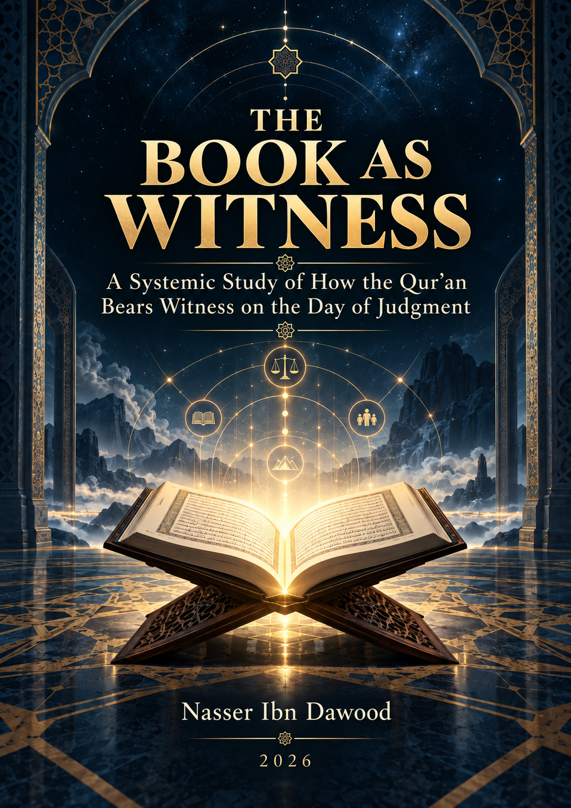

117. The Book as Witness

A systemic study of revelation, accountability, and evidence in Qur’anic discourse. Witness is an analytical term in the title, not a claim that revealed scripture is identical to the record of deeds.
قراءة PDF داخل الموقع / Read the PDF on this website
جارٍ تجهيز القارئ… / Preparing the reader…
Book Summary, Table of Contents & Excerpt
THE BOOK AS WITNESS
A Systemic Study of Revelation, Accountability, and Evidence in Qur’anic Discourse
Condensed Conceptual English Edition
Nasser Ibn Dawood
Qur’anic Language Jurisprudence — QCROS — Mathānī Method
2026
This edition is a conceptual adaptation of the Arabic publication candidate. It preserves the scientific status of claims while compressing linguistic detail, research logs, and extended internal documentation.
I. The Global Knowledge Manifesto
Knowledge is a universal right. The author firmly believes that wisdom should not be locked behind paywalls or language barriers.
Global Access Policy: All books in this library are available for free in multiple digital formats (PDF, HTML, DOCX, TXT).
The Digital Library: As of early 2026, the collection hosts 68 volumes (34 in Arabic and 34 in English), fully optimized for AI-assisted research and digital archiving.
Official Platforms: Main Website: nasserhabitat.github.io/nasser-books/
GitHub: nasserhabitat/nasser-books
This manifesto is reproduced here as supplied by the author for this condensed edition.
II. Translator’s Note: The Bridge of Meaning
This English edition is a condensed conceptual adaptation. It is not a word-for-word translation, but rather an "extraction of essence." It presents the core philosophical framework in accessible English, omitting the exhaustive linguistic debates and classical references found in the original Arabic text.
For the academic researcher: The original Arabic version remains the primary source for comprehensive linguistic analysis, detailed exegesis (Tafsir), and the complete bibliography.
This adaptation also preserves the methodological status of the Arabic edition. A claim marked OPEN remains open; a CANDIDATE remains a candidate; a RESISTED or STRONGLY RESISTED claim is not revived through simplification; and a CLOSED result remains closed only within its declared scope. The aim is clarity without scientific inflation.
Key Qur’anic terms are sometimes retained in transliteration—such as nafs, tawaffī, barzakh, and baʿth—when a single English equivalent would prematurely narrow the field under study.
Book Summary
This book asks a question that its title deliberately does not answer in advance: how does revelation appear within the Qur’anic network of accountability and evidence, especially in eschatological scenes? Does the text permit us to say that the Qur’an, or al-kitāb, functions as a formal judicial witness on the Day of Judgment? Or does the Qur’an present a more complex architecture in which revelation, messengers, witnesses, deeds-records, bodily testimony, and divine judgment remain distinct even when they appear in the same scene?
The phrase “The Book as Witness” is therefore an analytical title, not a claim that the Qur’an literally names itself “the witness,” nor a claim that the revealed Book is identical with the record of deeds. The book begins by establishing an epistemic guard: shared wording does not prove shared referent, co-occurrence does not prove causation, a local relation does not automatically become a root-wide law, and a model does not become a textual fact merely because it explains the data elegantly.
The study then moves through eight chapters. It first establishes the QCROS research path and the Mathānī method as a discovery tool rather than an independent proof. It distinguishes among kitāb, Qurʾān, dhikr, and furqān without forcing either absolute synonymy or absolute separation. It then examines the architecture of waḥy, messenger authority, prophetic clarification, and the question of whether any of these establish a second independent preserved legislative corpus. From there, it turns to preservation, continuity, confirmation, hegemony, religious unity, plurality of shirʿah, the difference between ikhtilāf and tafarruq, the eschatological network of evidence, and finally the analytical fields of functional displacement, authority displacement, laghw, ṭāghūt, and legislation without divine authorization.
Several results are stable within their tested scope. Shared Lexeme ≠ Shared Referent is a governing methodological rule. The identification of the revealed Book with deeds-records is not established. The Qur’an as a formal eschatological court witness is not established. Messenger authority and prophetic clarification are established as functions, but they do not by themselves prove a second independently preserved corpus. Confirmation does not entail full legal identity. The relation of hegemony is textually present, while its complete mechanism remains open. The coexistence of one dīn with plural shirʿah is closed within the tested network. The final definition of minhāj remains open. “Authority displacement” and “functional displacement” remain analytical models rather than Qur’anic technical terms.
The chief value of the study lies not in the number of conclusions it seals, but in the discipline with which it limits claims. OPEN is not FALSE. NOT ESTABLISHED is not NONE. CANDIDATE is not CLOSED. MODEL is not TEXTUAL FACT. The reader is therefore given not only conclusions, but also the means to challenge, narrow, reopen, or continue them.
General Introduction
From a Strong Title to a Testable Question
A title such as “The Book as Witness” can easily become a hidden conclusion. A researcher may enter the text already convinced that al-kitāb in an eschatological scene is the Qur’an, that the Book itself bears courtroom testimony, or that every occurrence of the same lexical form points to the same object. QCROS reverses that movement. The title organizes an inquiry; it does not settle the referent.